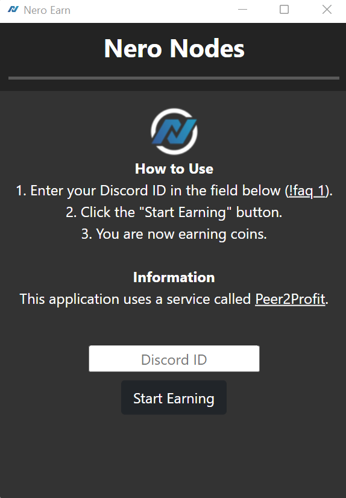

The only real way to support craftclue is by running nero-earner on your machine to generate "coins" for craftclue.
Explanation: The server host that craftclue uses has a system in which you buy hardware for your server with "coins". You also have to renew your server every week with these coins.
I earn 0.04 coins a minute. You can help speed up the coin earning process by downloading nero-earn (the app which earns coins) from here. After you download the app, run it. You will be greeted by the following:

Paste my Discord ID, 622834545120509953, into the box that says "Discord ID". Then, click the button that says "Start Earning". After you do this, just leave the application running in the background. Doing this will earn me coins.
In the future, there may be benefits for people who run nero-earn in the form of exclusive in game items and perks.